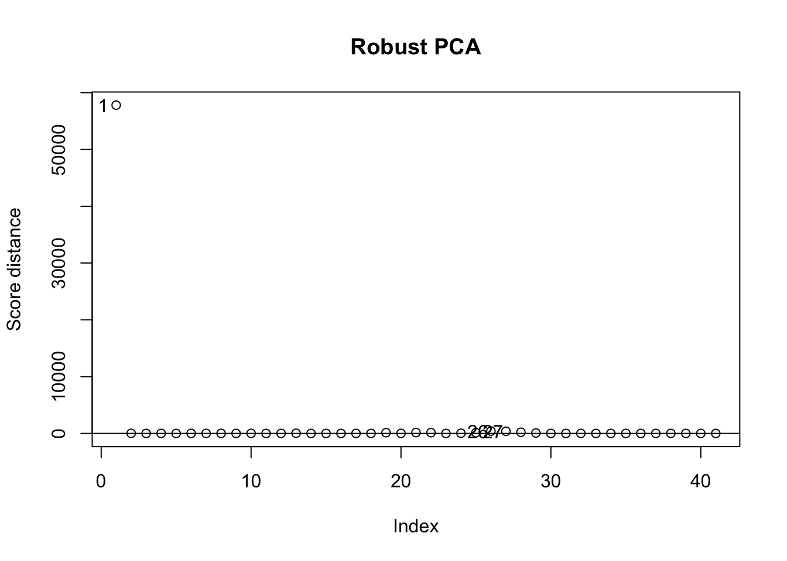

This report walks through an analysis of a subset of the machines data from the rrcov package (rows hp-3000/64 to ibm-4331-2).
1.1 Objectives of the study
Describe the variables using classical and robust summaries, Mahalanobis distances and graphical tools, and comment on the main patterns in the data.
Apply PCA on the original and standardized scales, compare the proportion of explained variance and interpret the retained components (keeping at least 95% of total variance).
Introduce a single atypical observation and compare the impact on classical PCA versus a robust PCA based on the MCD estimate.
2 Study plan (at a glance)
Inspect the data: structure, variable meaning, rough scales.
Classical and robust summaries to see skew/tails and dependence (covariance, distances).
PCA on raw vs standardized variables; compare variance explained and loadings; pick components reaching 95%.
Inject one outlier and compare classical vs robust PCA to illustrate sensitivity.
Conclude and state a recommendation for which PCA to report and why.
3 Setup and data
Code
# install.packages(c("rrcov", "robustbase"), repos = "https://cloud.r-project.org") # install if missinglibrary(rrcov) # robust multivariate methods (PCA, covariance)library(robustbase) # robust basics (MCD, etc.)data(machines) # load the machines datasetmachines_sub <- machines[71:111, ] # slice rows hp-3000/64 ... ibm-4331-2machines_sub$machine <-rownames(machines_sub) # store machine names for labelingrownames(machines_sub) <-NULL# drop row names to avoid confusionn_obs <-nrow(machines_sub) # count observationsn_vars <-ncol(machines_sub) -1# count numeric variables (exclude machine names)head(machines_sub, 3) # peek at the first rows
Code
# summarize each variable (min/mean/median/max/quartiles)summary(machines_sub)
4 Data description
Observations: 41 machines; numeric variables: 8.
Variables (all numeric):
MYCT cycle time (ns), MMIN min memory (KB), MMAX max memory (KB), CACH cache (KB),
CHMIN min channels, CHMAX max channels, PRP published perf, ERP estimated perf.
Machine IDs live in machine (formerly row names). Use them for labels, not for analysis.
Historically, these data come from the Computer Hardware dataset describing mainframe computers from the 1970s–1980s. Each row corresponds to a specific machine model, with hardware specifications (cycle time, memory, cache, number of I/O channels) and two performance measures. The variables CHMIN and CHMAX denote the minimum and maximum number of I/O channels the system can be configured with, so they reflect scalability for small versus large installations.
To make the variables more concrete, consider two machines in our subset:
hp-3000/iii has MYCT = 175 ns (slower CPU), MMIN = 256 KB and MMAX = 2000 KB of memory, no cache and between 3 and 24 channels (CHMIN = 3, CHMAX = 24), with published performance PRP = 22. This is a relatively modest system in both memory and performance.
ibm-3081 has MYCT = 26 ns (much faster), MMIN = 16000 KB and MMAX = 32000 KB of memory, cache CACH = 64, between 16 and 24 channels, and PRP = 465. It represents a high-end configuration with far greater memory and throughput capability.
These contrasts illustrate how larger memory, more channels and lower cycle time are associated with higher performance measures, which is precisely the multivariate relationship we summarise with PCA in later sections.
Before any formal analysis, these hardware considerations give us clear prior expectations: we anticipate a strong negative association between MYCT and the performance variables, and positive associations between MMIN, MMAX, CACH, the channel counts and PRP/ERP. We also expect PRP and ERP to be highly correlated, since both are measuring the same underlying notion of computing power. In terms of PCA, a natural prior is that the leading standardized component will reflect an overall “size/performance” level combining memory, cache and performance, while a secondary component may capture differences in channel configuration relative to speed.
Quick look at the machine names:
Code
head(machines_sub$machine, 5) # show first few machine IDs
Looking at the numbers, the strongest asymmetry appears in the memory and performance variables: for MMIN, MMAX, PRP and ERP the mean is roughly two to three times the median, and the 10% trimmed mean sits well below the raw mean. This points to heavy right tails driven by a few very powerful machines. CHMIN is also highly concentrated at small values (median 1 and MAD 0), with only a minority of models offering substantially more minimum channels. MYCT, CACH and CHMAX show milder but still noticeable right skew, with the mean above the median and the trimmed mean in between. Overall, the table suggests a market dominated by modest systems plus a smaller group of high-end configurations that pull the means upward.
5.2 Covariance, total and generalized variance
These give a sense of joint spread; generalized variance is the log-determinant (stable on the log scale).
At the marginal level the largest variances correspond to MMAX, MMIN, PRP and ERP, confirming that memory size and performance measures are the main sources of spread in the data; MYCT (cycle time) also varies substantially, whereas CHMIN and CACH are comparatively more concentrated. The covariance terms are strongly positive between memory and performance variables and negative between MYCT and the same quantities, reflecting that faster machines tend to be those with larger memory and higher performance ratings. The total variance is therefore dominated by a common “size/performance” factor, and the generalized variance indicates that the data cloud is elongated mainly along that direction rather than being equally spread in all dimensions.
5.3 Mahalanobis distances (classical vs robust)
We use Mahalanobis distances to flag candidate multivariate outliers. The classical version relies on the sample mean and covariance matrix, so both the estimated centre and the shape of the ellipsoid can be strongly influenced by extreme observations. The robust version replaces these by the MCD (Minimum Covariance Determinant) estimates, which are computed from a subset of points designed to downweight outliers and better represent the bulk of the data. In both cases we compare squared distances to the 97.5% quantile of a chi-square distribution with p degrees of freedom (p = number of numeric variables), treating points above this cutoff as potential outliers.
Code
md_classic <-mahalanobis( num_vars, # data matrixcenter =colMeans(num_vars), # classic mean vectorcov = S_classic # classic covariance matrix)cutoff <-qchisq(0.975, df =ncol(num_vars)) # 97.5% chi-square threshold# Robust (MCD) Mahalanobis distancescmcd <- robustbase::covMcd(num_vars) # robust center/covariance via MCDmd_robust <-mahalanobis( num_vars, # data matrixcenter = cmcd$center, # robust centercov = cmcd$cov # robust covariance)par(mfrow =c(1, 2)) # two plots side by sideplot(md_classic, pch =19, main ="Mahalanobis (classic)", ylab ="Distance") # classic distancesabline(h = cutoff, col ="red", lty =2) # cutoff lineplot(md_robust, pch =19, main ="Mahalanobis (robust MCD)", ylab ="Distance") # robust distancesabline(h = cutoff, col ="red", lty =2) # cutoff line
Interpretation: both classical and robust distances keep most machines below the 97.5% cutoff (≈17.5), showing a fairly homogeneous core around a single multivariate centre. The classical rule flags 5 candidate outliers (mostly high-end IBM and Honeywell models), while the robust MCD rule flags 16, including additional high-performance and large-memory systems. The robust method is more sensitive here because it estimates centre and scatter from the bulk of the data: this tightens the covariance ellipsoid around typical machines, so extreme configurations fall more clearly beyond the chi-square threshold. In contrast, the classical covariance is inflated by the same extreme points it is trying to detect, which stretches the ellipsoid and can mask some moderate outliers.
5.4 Summary of the preliminary analysis
Overall, the subset contains 41 machines with heterogeneous hardware characteristics (MMIN, MMAX, CACH, channel counts and performance metrics). The comparison between mean, median, trimmed and winsorized means, together with the MAD values, highlights variables where the bulk of the data is concentrated but a few machines deviate substantially from the main group. The covariance matrix and Mahalanobis distances confirm this picture: most observations form a compact cloud near a common centre, while a small number of models, such as honeywell-dps:6/96, ibm-3081 and honeywell-dps:8/49, display unusually large memory, cache and performance values and are flagged as multivariate outliers.
This preliminary step already suggests a dominant “size/performance” gradient in the data, ranging from modest systems to high-end machines. This motivates the use of PCA in the next section to summarise that multivariate structure with a reduced number of components while retaining most of the total variance.
6 Principal Component Analysis (original vs standardized)
We compare PCA on raw scales (keeps original units) vs standardized (puts variables on equal footing).
Code
pca_raw <-prcomp(num_vars, center =TRUE, scale. =FALSE) # PCA on raw scalepca_std <-prcomp(num_vars, center =TRUE, scale. =TRUE) # PCA on standardized data# ensure numeric to avoid class quirks on sdevsdev_raw <-as.numeric(pca_raw$sdev) # SDs of PCs (raw)sdev_std <-as.numeric(pca_std$sdev) # SDs of PCs (std)pve_raw <- sdev_raw^2/sum(sdev_raw^2) # proportion variance explained (raw)pve_std <- sdev_std^2/sum(sdev_std^2) # proportion variance explained (std)
6.1 Scree plots and variance explained
Red line marks 95% cumulative variance target.
Code
par(mfrow =c(1, 2)) # side-by-side scree plotsplot(pve_raw *100, type ="b", pch =19, xlab ="PC", ylab ="% variance",main ="Raw scale") # raw PVElines(cumsum(pve_raw) *100, type ="b", col ="blue") # cumulative PVE (raw)abline(h =95, col ="red", lty =2) # 95% lineplot(pve_std *100, type ="b", pch =19, xlab ="PC", ylab ="% variance",main ="Standardized") # standardized PVElines(cumsum(pve_std) *100, type ="b", col ="blue") # cumulative PVE (std)abline(h =95, col ="red", lty =2) # 95% line
Code
par(mfrow =c(1, 1)) # reset layout
Code
k_raw <-which(cumsum(pve_raw) >=0.95)[1] # PCs needed (raw) for 95%k_std <-which(cumsum(pve_std) >=0.95)[1] # PCs needed (std) for 95%data.frame(scale =c("raw", "standardized"), # scale typepcs_needed_for_95pct =c(k_raw, k_std), # count of PCs to reach 95%cumulative_variance =c(cumsum(pve_raw)[k_raw], cumsum(pve_std)[k_std]) # achieved cum PVE) # show summary
Interpretation: - On the original scale, PC1 alone explains about 94% of the total variance and PC1–PC2 together almost 100%, but this summary is dominated by the variables measured on larger scales (memory and performance), so it is less suitable for comparing the relative importance of all variables. - On the standardized scale, PC1 explains roughly 65% of the variance and PC1–PC2 together about 80%, with the first 5 PCs needed to reach the 95% threshold; this represents a clear reduction from the original 8 dimensions while keeping most of the multivariate information. - The loadings table for the standardized PCA (next subsection) shows that PC1 is dominated by memory and performance variables, whereas PC2 contrasts channel capacity (CHMAX) with cycle time and minimum channels; we interpret these as a “capacity/performance” axis and an “I/O-versus-speed” axis, respectively. - For dimension reduction and interpretation we therefore focus on the standardized PCA and retain the first 5 components, reading PC1 as an overall performance/memory scale and PC2 as a channels-versus-speed dimension; the remaining retained PCs mainly capture subtler contrasts among already powerful machines.
6.2 Loadings and interpretation aids
To make the previous interpretation concrete, we inspect which variables drive the first standardized PCs (signs may flip without changing interpretation).
Code
loadings_std <-round(pca_std$rotation[, 1:2], 3) # loadings for PCs 1 and 2 (standardized PCA)loadings_std
Interpretation: the standardized score plot shows where machines align along the performance/memory axis (PC1) and the channels-vs-speed axis (PC2). In our sign convention, higher-performance, higher-memory machines have large negative PC1 scores (to the left), while lower-capacity systems lie towards the right; the vertical spread reflects different channel configurations relative to cycle time. Labels make it easy to relate extreme scores back to specific models when discussing results.
7 Outlier experiment
Introduce the atypical point at the former hp-3000/64 row (no standardization).
This comparison of variance shares shows that the injected outlier substantially changes the classical PCA: the proportion of variance explained by the leading components is redistributed (roughly 58% and 40% for the first two PCs, rather than about 94% and 6% in the uncontaminated analysis), indicating that the first axes are now driven by the extreme point. In practical terms, the classical PCs are no longer summarising the variability among typical machines but are instead oriented to separate the modified hp-3000/64 from the rest. In contrast, the robust PCA eigenvalues remain close to those obtained without the outlier (around 92% for the first component and 7% for the second), so the bulk geometry of the original data is largely preserved.
7.1 Visual comparison: scores
Outlier effect: in classical PCA, the first axes are strongly influenced by the extreme point; robust PCA should stay closer to the bulk structure.
In the classical scores plot with the outlier, the modified hp-3000/64 appears in the far upper-right quadrant with extremely large PC1 and PC2 scores, while high-end IBM machines (such as ibm-3081 and ibm-3083:b) lie far to the upper left with large positive PC2 and large negative PC1. The remaining machines form a central cloud that is visually compressed by comparison, indicating that the first classical components are now mainly separating these few extreme configurations from the rest of the sample. In the robust scores plot, the modified observation is still clearly separated from the bulk, but the overall cloud of machines—and the orientation of the principal directions—remains much closer to the uncontaminated PCA, so the robust components continue to describe variability among typical configurations rather than being dominated by the single injected outlier.
7.1.1 Distance diagnostics (robust PCA)
Code
plot(pca_out_robust) # outlier map: orthogonal vs score distances

In this outlier map the horizontal axis shows the score distance, which measures how far an observation lies within the PCA subspace (essentially the length of its score vector after scaling by the robust eigenvalues). The vertical axis shows the orthogonal distance, which measures how far the observation lies from the PCA subspace itself (the norm of the reconstruction residual). Points with small score and orthogonal distances belong to the central cloud. Observations with large score distance but small orthogonal distance are leverage points within the PCA structure, whereas those with large orthogonal distance are “off-plane” outliers that are poorly represented by the retained components. The modified hp-3000/64 appears in the upper part of this plot, confirming that it is a clear outlier relative to the robust PCA model.
8 Decisions
For exploratory analysis we rely on classical summaries to describe central tendency and spread, but interpret them in parallel with robust statistics (trimmed and winsorized means, MAD and MCD-based Mahalanobis distances) to avoid being misled by a few extreme machines.
For dimension reduction we base our decision on the proportion of variance explained and interpretability of the loadings: we favour the standardized PCA and retain the first 5 principal components, which already explain at least 95% of the total variance in the eight numeric variables.
When a single atypical observation is present, we use robust PCA based on the MCD covariance estimate to describe the multivariate structure of the bulk of the data, and treat the classical PCA mainly as a diagnostic to illustrate the effect of the outlier.
9 Conclusions
The subset of machines data considered here exhibits a clear gradient from low to high capability systems, mainly driven by memory size, cache and performance measures. The preliminary analysis using classical and robust summaries, together with Mahalanobis distances, shows that most machines cluster around a central configuration while a small number of high-end models stand out as multivariate outliers.
Standardized PCA provides an effective summary of this structure: with only 5 components we retain at least 95% of the total variance and obtain interpretable directions, where the first component captures an overall performance/memory level and the second contrasts channel capacity with speed. Plotting the scores on these components reveals how specific named machines occupy different regions of the performance–channels trade-off.
After injecting the artificial outlier, classical PCA becomes strongly influenced by this single observation, reallocating a large share of variance to the first component and distorting the geometry of the remaining points. In contrast, the MCD-based robust PCA keeps the eigenvalues and loading patterns closer to the original analysis and clearly isolates the modified machine in the outlier map. This comparison illustrates the vulnerability of classical PCA to even one atypical observation and motivates the use of robust methods when data contamination is plausible.
10 Bibliography
Jolliffe, I. T. (2002). Principal Component Analysis. Springer.
Todorov, V., & Filzmoser, P. (2009). An object oriented framework for robust multivariate analysis. Journal of Statistical Software, 32(3), 1–47. ***